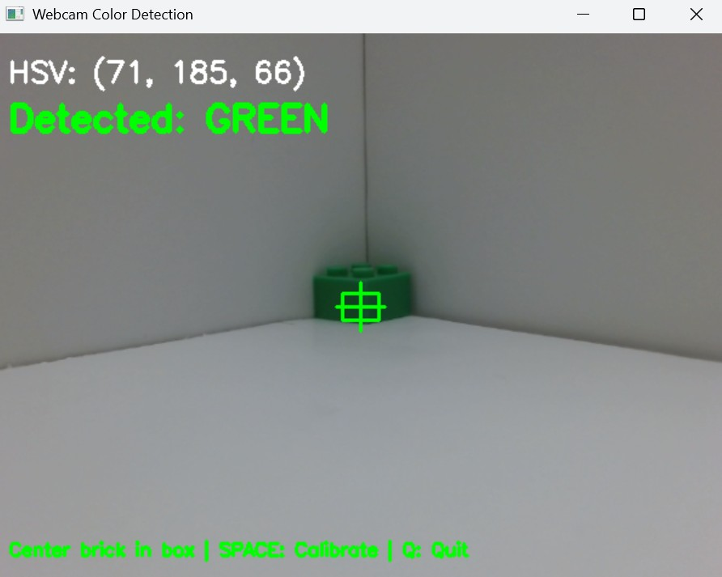

Lego Brick Sorter
Overview
This project involved designing and building an automated Lego brick sorting machine capable of
identifying Lego bricks by color and shape using computer vision, then physically routing each
brick into the correct bin via a custom mechanical sorting mechanism.

Lego brick sorting machine with camera and sorting mechanism
Design Goals
- Automatically detect and classify Lego bricks by color and shape
- Route each brick to the correct output bin without human intervention
- Handle multiple brick types reliably at a reasonable throughput rate
- Keep the build cost low by using 3D-printed parts and off-the-shelf components
Computer Vision System
A camera mounted above the conveyor belt captures images of each brick as it passes by.
A Python-based vision pipeline processes the images in real time:
- Color Detection: HSV thresholding isolates the brick color from the background,
categorizing each brick into a predefined set of color groups
- Shape Classification: Contour analysis and aspect-ratio calculations identify
key brick dimensions to distinguish between stud counts and brick profiles
- Decision Logic: Color and shape results are combined to determine the target
output bin for each brick before it reaches the sorting gate
Mechanical Design
The machine consists of three main mechanical subsystems:
- Conveyor Belt: Moves bricks under the camera at a controlled speed to allow
consistent image capture and reliable detection
- Sorting Gate: A servo-driven diverter positioned downstream of the camera
directs each brick into the appropriate output bin based on the vision system's classification
- Hopper and Feed System: A passive hopper with a vibration motor ensures a
steady single-file supply of bricks onto the conveyor belt
Embedded Systems and Control
- A Raspberry Pi handles image capture and runs the Python vision pipeline
- GPIO pins control the servo motor and conveyor belt motor driver
- Timing logic synchronizes belt speed with classification results to ensure the gate
actuates at the correct moment for each brick
Technologies and Tools
- Python / OpenCV: Image processing, color and shape classification
- Raspberry Pi: Embedded computing and GPIO control
- SolidWorks: Mechanical design and assembly modeling
- FDM 3D Printing: Rapid prototyping of custom brackets, hoppers, and gate components
- Servo and DC Motors: Actuation for the sorting gate and conveyor belt
Challenges and Solutions
- Lighting Variability: Ambient lighting caused inconsistent color readings.
Solution: Added a diffused LED ring around the camera to ensure uniform, controlled illumination
- Brick Orientation: Bricks arriving at random orientations complicated shape
detection. Solution: Designed a passive alignment channel that orients bricks before they reach the camera
- Timing Accuracy: Delayed actuation caused bricks to miss the target bin.
Solution: Calibrated the belt speed and gate trigger time to account for the travel distance between
the camera and the sorting gate
Results
The finished machine successfully sorts common Lego brick types with high accuracy.
The system demonstrates how low-cost hardware and open-source computer vision tools can be
combined to automate a practical physical sorting task.